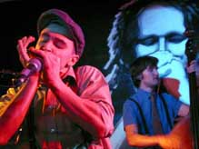

Ностальгический, интимный блюз, белорусская энергия и много … джаза - такими в этом году были Zaduszki Bluesowe. В клубе FAMA, в котором уже много лет проходит эта вечеринка, как всегда яблоку негде было упасть.Zaduszki проводятся уже 20 лет в начале ноября в память умершего 20 лет назад Рышарда "Скиба" Скибиньского, известного польского блюзмена и лидера группы Kasa Chorych. Вечеринка предворяет белостоцкий фестиваль Jesien z Bluesem (Осень с блюзом) - один из важнейших и старейших блюзовых форумов.Скибиньский был автором идеи создания этого фестиваля (в этом году 20-22 ноября). Субботний концерт начался теплым воспоминанием об этом музыканте и зажиганием символических свечек.
Сначала выступила группа Proud Mary (Каролина Кориат и Александра Семенюк). Девушки, вдохновленные традиционным блюзом чернокожих музыкантов 20-30 годов ХХ века, представили классический блюз: чистый немного суровый голос в сопровождении акустической гитары. Вокалистка Proud Mary - лучшее доказательство того, что некоторые просто рождаются с голосом, созданным для исполнения блюза. Девушки создали в зале спокойную ностальгическую атмосферу.
Но ского из такого настроения публику вырвали музыканты Big Val, Svet & Al, приехавшие из Минска. Не смотря на небольшие проблемы с подзвучиванием, они до такой степени расшевелили публику, что она несколько раз вызывала музыкантов на бис. Зрители с удивлением смотрели на белоруса, играющего на гармошке. Некоторые его трюки на сцене напоминали о возможностях резинового человека.
В конце вечера играли звезды - группа Jazz Band Ball Orchestra из Кракова, отметившая недавно свое сороколетие. Эти музыканты во время концерта делились со слушателями огромным количеством энергии и зрители пустились впляс. Потом был джэм.
Более чем пятичасовой концерт закончился заполночь.